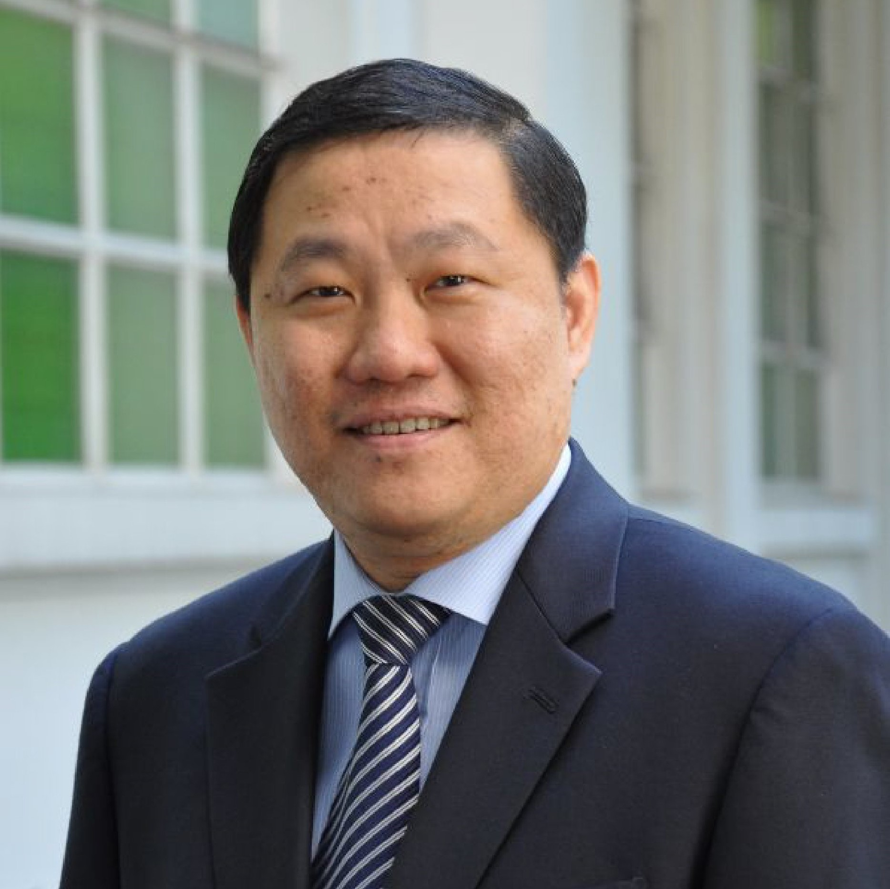

IJCAI 2021
AI for Cognitive and Physical Frailty Workshop (AIF)
August 21-26 2021 | Montreal, Canada (Virtual)
News
- 05/2021: Presentation Submission Deadline: June 20, 2021 (11:59 PM UTC-12). Note that submissions after June 20, 2021 will no longer be published in the IJCAI 2021 proceedings, but they can still be presented in the workshop after selection. Since the CMT submission portal is closed, please send your late submissions through email (To: xjzhao[at]ntu.edu.sg).
- 05/2021: Paper Submission Deadline: June 20, 2021 (11:59 PM UTC-12).
- 05/2021: Best Paper Prize, Best Student Paper Award, Best Presentation Award: The author/team of these papers will be awarded certificates.
- 05/2021: Submission Website: https://cmt3.research.microsoft.com/IJCAIAIF2021
Introduction
Frailty can be understood as a state of increased vulnerability to stress due to the decrease in the individual's homeostatic reserves. It is also an intermediate state between aging and several negative health consequences (e.g., dementia and death). Frailty is a potentially reversible pathological aging process on both cognition and physical. Cognitive and physical frailty can occur at any age of the population, but are particularly prevalent in the elderly.
Artificial Intelligence is seismic forces shaping the 21st century and has become one of the largest computer science research communities. However, while our field is expanding, the group with cognitive and physical frailty are somehow getting left behind. For example, in the domain of AI-assisted rehabilitation, most of the existing research works focus on the groups of people who already suffer from diseases. But some diseases are irreversible (such as dementia). In this case, research on early intervention to cognitive frailty populations would be more effective.
This workshop aims to bring together researchers, representatives of potential beneficiaries, relevant members of social groups, relevant industry participants, potential investors in the fields of AI in cognitive and physical frailty, healthcare, ageing and rehabilitation, etc. We look forward to discussing how AI can be used to assist groups of people with cognitive and physical frailty, improving healthcare delivery, public health, social well-being and ageless aging, etc. Researchers at all levels who are interested in AI are welcome and encouraged to attend the workshop.
Invited Talks
 |
 |
|
| Wee Shiong Lim Tan Tock Seng Hospital, Singapore |
Cyril Leung The University of British Columbia, Canada |
Tao Wang Peking University, China |
Schedule
| Time (PST) | Invited speaker | Title | Recording |
|---|---|---|---|
| 1:00 PM - 1:10 PM | OC Team | Opening Remarks | |
| 1:10 PM - 1:45 PM | Speaker 1 (TBD) | TBD | |
| 9:10 - 9:40 | Speaker 2 (TBD) | TBD | |
| 9:40 - 10:20 | - | Coffee Break and Poster Session | |
| 10:20 - 10:50 | Speaker 3 (TBD) | TBD | |
| 10:50 - 11:20 | Speaker 4 (TBD) | TBD | |
| 11:20 - 11:35 | Oral Speaker 1 | TBD | |
| 11:35 - 11:50 | Oral Speaker 2 | TBD | |
| 11:50 - 12:00 | OC Team | Closing Remarks, certificate will be offered to selected presenters of oral and poster sessions. | |
Committee
 |
 |  |
 |
| Chunyan Miao | Chin Jing Jih | Bei Li | Hong Xu |
| Nanyang Technological University, Singapore | Tan Tock Seng Hospital, Singapore | Alibaba Group, China | Nanyang Technological University, Singapore |
 |
 |
 |
|
| Takayuki Ito | Yiqiang Chen | Cuntai Guan | Zhiqi Shen |
| TKyoto University, Japan | Chinese Academy of Sciences, China | Nanyang Technological University, Singapore | Nanyang Technological University, Singapore |
 |
 |
||
| Rabab Ward | Xuejiao Zhao | Hao Zhang | Yundong Cai |
| The University of British Columbia, Canada | Nanyang Technological University, Singapore | Nanyang Technological University, Singapore | Nanyang Technological University, Singapore |
 |
|||
| Zhiwei Zeng | |||
| Nanyang Technological University, Singapore |
Sponsors
Exclusive Sponsorship
 |
Best Paper Sponsorship
|